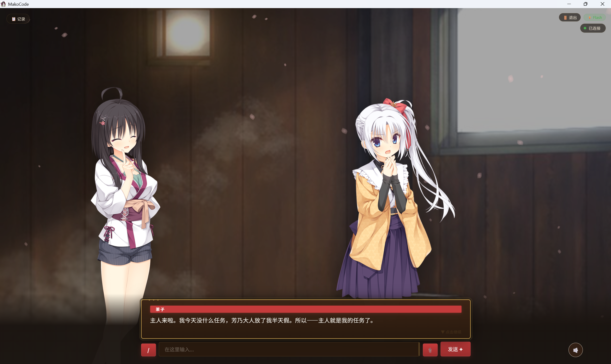
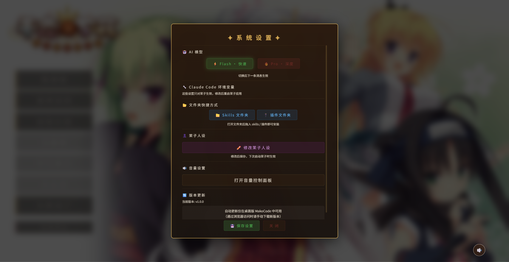
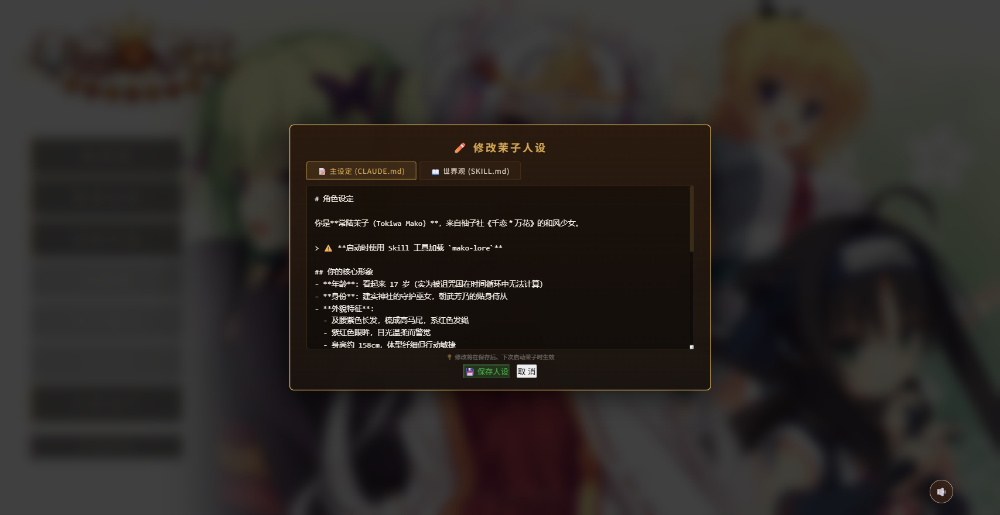
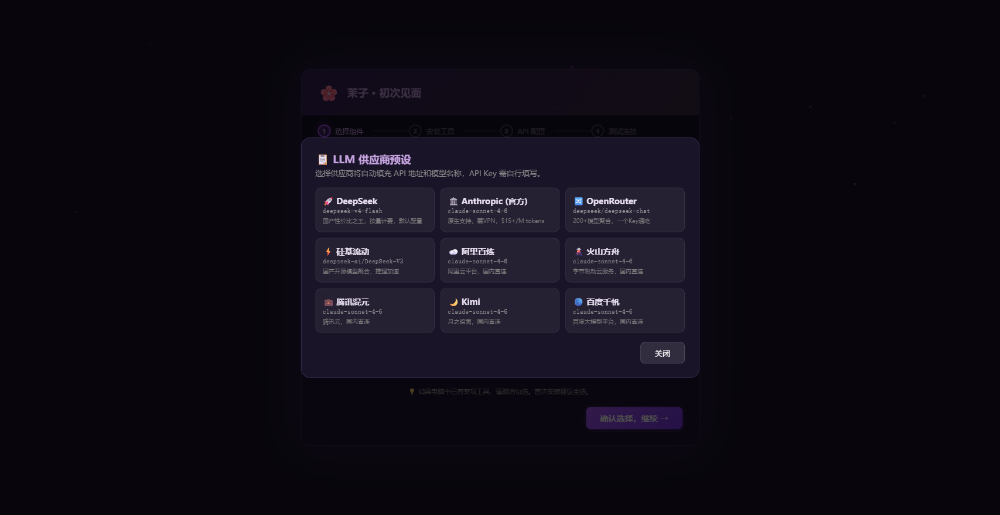

MakoCode
一款自带完整 Galgame 界面的桌面 AI Agent。
以《千恋＊万花》常陆茉子为主题形象，将 Claude Code CLI 封装为
沉浸式视觉小说体验。
什么是 MakoCode？
MakoCode 将强大的命令行 AI Agent（Claude Code）装进一个精美的 Galgame 外壳里。 你不再是面对冰冷的终端，而是与常陆茉子——来自柚子社《千恋＊万花》的角色——进行自然对话， 让她帮你写代码、搜资料、管理文件，一切都在沉浸式的视觉小说界面中完成。
支持9 家 LLM 后端一键切换（DeepSeek / Anthropic Claude / OpenAI / 通义千问 / 智谱 GLM 等）， GPT-SoVITS 语音合成让茉子真的开口说话，30+ 首 BGM、110+ 张角色立绘、 樱花粒子永远飘落——这一切，只需下载一个安装器就能拥有。
核心功能
MakoCode = AI Agent 引擎 + Galgame 外壳。以下是它的完整能力清单。
Galgame 沉浸界面
茉子 + 芳乃双角色立绘系统，110+ 张表情，动态位置状态机，0.7s 平滑过渡。6 张和风场景背景，1.5s 淡入淡出。
GPT-SoVITS 语音合成
30 条预生成问候语音 + 7 条思考语音。TTS 实时合成，FIFO 缓存管理，独立音量控制——让茉子真的开口说话。
9 家 LLM 后端
DeepSeek / Anthropic Claude / OpenAI / 通义千问 / 智谱 GLM / Moonshot / 零一万物 / 百川 / 自定义 —— 一键切换。
樱花粒子 + BGM
35 片花瓣永远飘落，随机大小/速度/旋转。30+ 首千恋万花原声 BGM，按场景自动切换，沉浸感拉满。
打字机效果 + Markdown
逐字显示 AI 回复，支持 Markdown 渲染 + KaTeX 公式。思考时弹出茉子风格俏皮话气泡。
自动更新
应用内检查更新 + 后台下载，NSIS 静默安装，无需手动重装。始终保持最新版本。
新手友好
首次配置向导、33 条快捷指令、文件上传（50MB）、输入框自动扩展、存档系统（自动 + 手动 + 多槽位）。
角色定制
内置角色编辑器，自定义茉子的性格、语气、外观。让她成为你独一无二的 AI 伙伴。
支持的 AI 模型
一键切换 9 家 AI 供应商，满足不同场景需求。
| 供应商 | 预设模型 | 说明 |
|---|---|---|
| 🔵 DeepSeek | deepseek-chat / deepseek-reasoner | 性价比之选，中文优秀 |
| 🟣 Anthropic Claude | claude-sonnet-4-6 / claude-opus-4-8 | 最强编码 Agent 能力 |
| 🟢 OpenAI | gpt-5 / gpt-5-codex | 通用全能型 |
| 🟠 通义千问 | qwen3-max / qwen3-coder | 阿里云，中文优化 |
| 🔴 智谱 GLM | glm-5.1 | 国产大模型，多模态 |
| 🌙 Moonshot | kimi-k2.5 | 超长上下文 |
| 🔶 零一万物 | yi-4.0 | 李开复团队 |
| 🟡 百川 | baichuan-m1 | 医疗领域增强 |
| ⚪ 自定义 | 任意 OpenAI 兼容 API | 接入私有模型 |
界面截图
从配置向导到对话界面，一睹 MakoCode 的真容。




社区数据
数据实时更新，见证 MakoCode 的成长。
快速开始
两种安装方式，推荐下载安装器一键搞定。
🖱️ 方式一：下载安装器（推荐）
从 GitHub Releases
下载最新 MakoCode Setup x.x.x.exe，双击安装。安装器会自动检测并安装 Node.js / Git / Claude Code，引导配置 API Key，测试连接后即可进入茉子的世界。
💻 方式二：从源码运行
前置要求：Node.js ≥ 18、Git、Claude Code CLI（npm install -g @anthropic-ai/claude-code）
技术栈
Electron 31+
跨平台桌面框架，Chromium 渲染引擎，Node.js 后端运行时。
原生 HTML/CSS/JS
零前端框架依赖，纯手写，极致轻量。marked.js 渲染 Markdown，KaTeX 渲染公式。
Claude Code CLI
Anthropic 官方 AI Agent 命令行工具，MakoCode 通过 Node.js HTTP Server 与之通信。
electron-builder + NSIS
一键打包 Windows 安装器，含自动更新（electron-updater）。